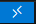

VScode on the cluster
VScode is a very potent IDE that is used by many people, including at the CRNL.
However, the straightforward usage of VScode on the cluster poses a big collective problem. Indeed, when you open a SSH session with VScode, you arrive in the so-called “login node” (currently node14 on the new server, and node12 on the old one). This node is not supposed to perform any computation, but instead to organise input-output, ssh connections, etc.
Even if they do most of their computations using jobs submitted to SLURM, VScode users (I am amongst them) can still make (made!) the entire infrastructure crash by overloading the “login node”. This is because every VScode user will open some notebook, load some data, call slurm from that same login node. So, when 10 or 20 of them are connected at the same time…
💥
Fortunately, a simple solution exists and this tutorial will guide you through it.
1. Install the remote tunnel extension (only once)
On your local computer (either at home or in the lab), install the Remote - Tunnel extension of VS code.
2. Connect to the cluster through SSH and add a SSH key (only once)
Find your .ssh folder.
On Linux, you can probably find it at ~/.ssh/ or /home/username/.ssh/.
On Window, you can probably find at at C:\Users\username\.ssh\.
If you don’t find it, just create it and cd in it. Then type:
ssh-keygen -f crnlcluster
If ssh-keygen is not found, you may need to install Putty, restart your terminal and perform these steps again.
Follow the instructions. If you want to use a passphrase, keep it short. Otherwise press Enter to skip entering a passphrase. Then type: type crnlcluster.pub
You public key will appear in the terminal. Keep it open.
Now, type:
ssh cluster_username@10.69.168.93
Change cluster_username to match your username on the cluster (typically, firstname.lastname)
You will be asked to enter your CRNL password (the same you use to enter in the wiki.crnl.fr and to open Jupyter lab sessions)
Now, you are logged in the cluster! Type:
cd ~/.ssh/
touch authorized_keys
vi authorized_keys
This last command will open a blank file, unless you already registered some SSH keys in the past. In any case, make sure your pointer is at the end of the document and copy paste what had appeared in your local terminal (after type crnlcluster.pub). To paste, you only need to make a right-click. To save and close the authorized_keys file, just type :wq in it.
Close the terminal.
Now, the cluster knows your ssh key and you won’t need to use the password anymore (only the ssh key passphrase if you entered one). But let’s make an extra-step to further automatize the process.
In your local .ssh folder, create a file named config and add the following lines to it:
Host CRNLcluster
HostName 10.69.168.93
User cluster_username
ForwardX11 yes
ForwardX11Trusted yes
IdentityFile "path/to/your/sshkey/crnlcluster"Adjust cluster_username and do not add the .pub extension to your IdentityFile/sshkey.
Now, open a terminal and type:
ssh cluster_username@CRNLcluster
You are already into the cluster! Keep this terminal open for the next step.
3. Download VS code on the cluster (only once)
In the terminal of the cluster (i.e. after type ssh cluster_username@CRNLcluster), run these two lines
wget --user-agent=Mozilla --content-disposition -E -c "https://code.visualstudio.com/sha/download?build=stable&os=linux-x64" -O vscode.tar.gz
tar -xzf vscode.tar.gzVScode is now available in our home directory.
4. Create a tunnel to VS code on the cluster from your local computer (only once)
Windows users On your local computer, create a file named vscode_cluster_tunnel.bat and copy paste the following lines:
@echo off
set "remote_username=cluster_username"
set "remote_hostname=CRNLcluster"
ssh -t %remote_username%@%remote_hostname% "srun --mem=16G --cpus-per-task=8 --pty $SHELL -c '~/VSCode-linux-x64/bin/code tunnel'; bash"Note, if you use the Notepad to create the file, make your to select the option ‘All files’ in “Save as type”. Otherwise, you won’t be able to have a .bat extension (it would be .bat.txt, which does not work!)
Linux users On your local computer, create a file named vscode_cluster_tunnel.sh in a convenient place and copy-paste the following
#!/bin/bash
remote_username="cluster_username"
remote_hostname="CRNLcluster"
ssh -t "${remote_username}@${remote_hostname}" "srun --mem=16G --cpus-per-task=8 --pty \$SHELL -c '~/VSCode-linux-x64/bin/code tunnel'; bash"Now, each time you will need to open a VS session on the server, you will need to run this .bat or .sh file. But the first time, you will run this script, the terminal window will ask you to authorize the tunnel through Github (or Microsoft) and to give it a name. Name it as you prefer (for example: vscode_cluster_tunnel). Follow the instructions (make sure you are connected to Github in your browser, open the link and copy paste the authorization code)
Consider using Github as a tunnel provider rather than Microsoft.
5. Connect to the tunnel from your local VS code (each time)
Run the script vscode_cluster_tunnel.sh or vscode_cluster_tunnel.bat (on Windows, you can just double click on the .bat file).
Then, in VS code, either press Ctrl+Shift+P and type “tunnel connect” to select the function “Remote Tunnels: Connect to Tunnel”, or click on the bottom left icon that look like this:

And click “Connect to Tunnel”
Then, select Github and the tunnel name that you have defined just before.
That’s it!
You are now running VS code on a compute node with dedicated ressource. You can mess around, it won’t interfere with the happiness of other users!
When you stop using VS code, quit or kill the process initiated by vscode_cluster_tunnel (on Windows, just close the corresponding Terminal window) It will automatically interrupt the SLURM job that runs your VS code session, and free resources for your colleagues!